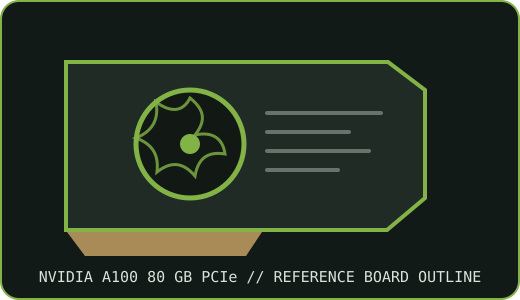

[ NVIDIA // IDENTIFIED GRAPHICS ACCELERATOR ]
NVIDIA A100 80 GB PCIe accelerator
NVIDIA Ampere; GA100 GPU. This record describes the specified PCIe product configuration, not every OEM implementation.

MODEL IDENTIFICATION: 80 GB PCIe card only; the 40 GB PCIe A100 and SXM versions are distinct configurations with different specifications. Match the board label, part number and revision before applying reference specifications.
Recorded specifications
| Cataloged part | NVIDIA A100 80 GB PCIe accelerator |
|---|---|
| GPU architecture / chip | GA100 (Ampere) |
| VRAM type / capacity / bus | 80 GB HBM2e with ECC; 5120-bit bus; 1,935 GB/s bandwidth |
| Board power / power connector | 300 W maximum board power for the PCIe 80 GB model; 8-pin EPS12V auxiliary input on reference board (not interchangeable with PCIe GPU 8-pin) |
| Host interface | PCIe Gen4 x16 |
| Outputs / form factor / cooling | No display outputs; compute accelerator; dual-slot, full-height, full-length passive server card |
| Model boundary | 80 GB PCIe card only; the 40 GB PCIe A100 and SXM versions are distinct configurations with different specifications. |
| Archive identification | Record complete board part number, hardware revision, serial/date code, VBIOS/firmware, device/subsystem IDs, driver version, power lead and source-document revision. |
Compatibility and installation caveats
Requires a server validated for the 300 W passive card, EPS12V auxiliary lead and sustained airflow. Do not substitute a PCIe GPU 8-pin cable for EPS12V. PCIe card and SXM baseboard are not interchangeable. Confirm platform firmware, supported CUDA/NVIDIA data-center driver, cooling, and MIG configuration.
- Check the exact card manual and server qualification list for slot, power pinout, chassis clearance, airflow and firmware support before installation.
- Preserve the driver and firmware source/version used for evaluation; do not assume consumer GeForce software or an unqualified workstation supports data-center features.
- Power only a board with undamaged connectors and verified supply/cable pinout; record condition before bench testing.
Manufacturer sources
- NVIDIA A100 Tensor Core GPU datasheet resourceOfficial NVIDIA technical reference for model-level configuration; compare to the exact OEM board and revision.
- NVIDIA A100 product specifications and deployment documentationNVIDIA model/product documentation and platform context; verify the actual card label and system manual.
Specifications are reference-board values unless explicitly tied to a named OEM SKU. Cable pinout, cooling and feature enablement can vary by system.